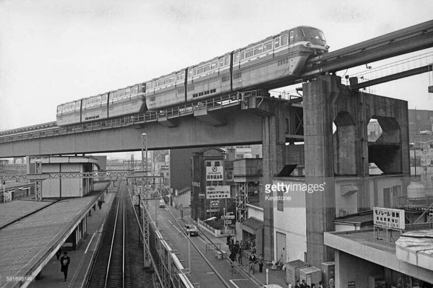
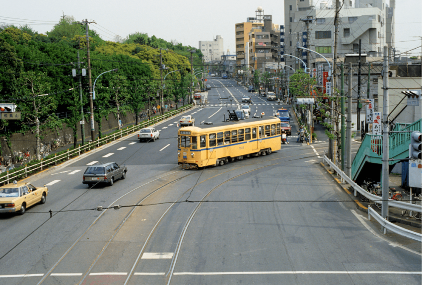
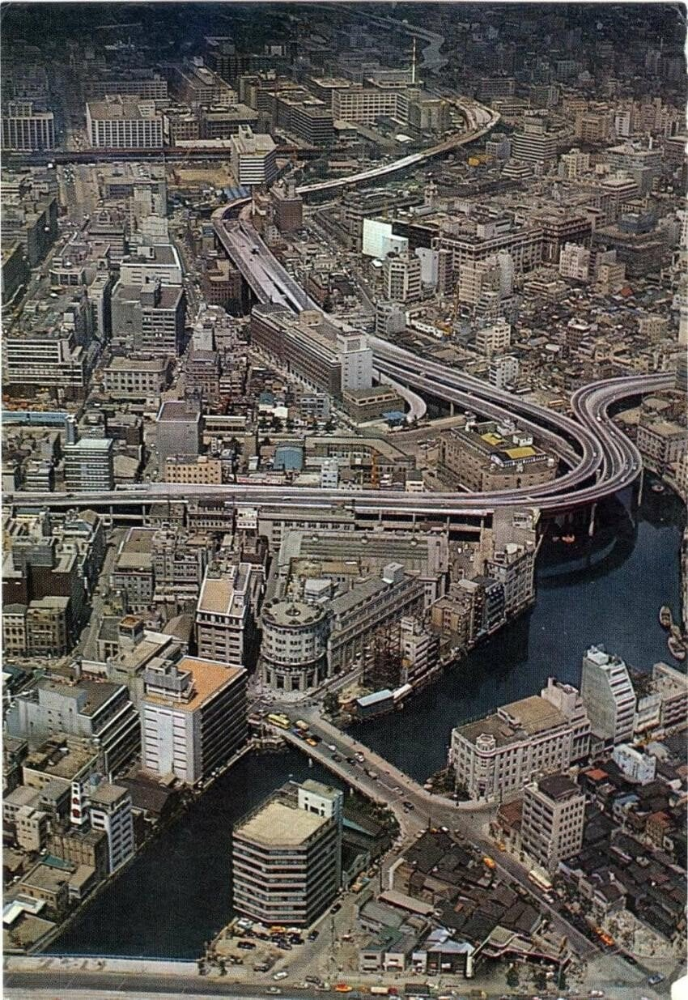
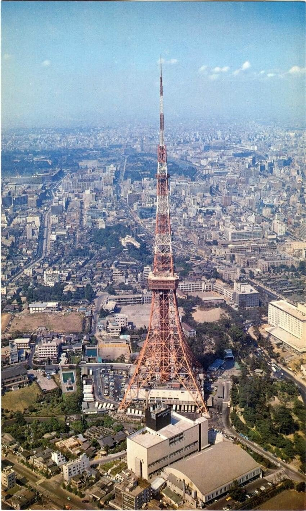
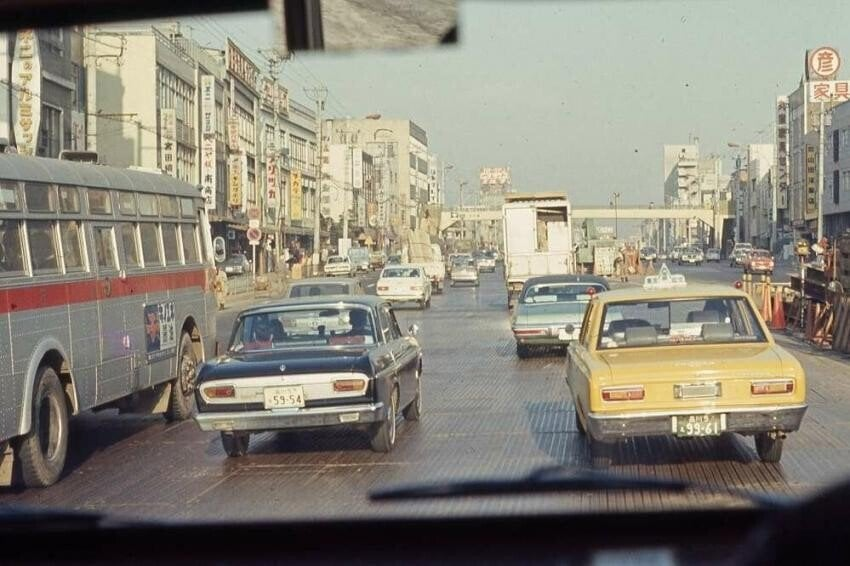
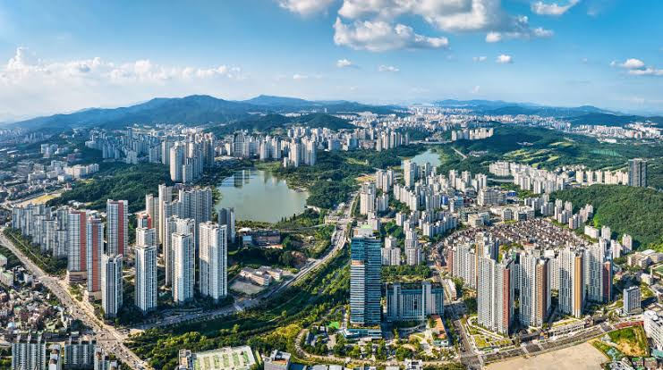

어떻게 저렇게 긍정적으로 살 수 있는건지 본받아야함






어떻게 저렇게 긍정적으로 살 수 있는건지 본받아야함
오나니
우리가 일본보다 정신력이 더 높고 도덕적으로 우위에 있다고 믿었음
일본보다 못사는것을 인정하고 일본보다 더 살기위해 노력했던 시기지
정신력은 몰라도 도덕성은 흠.. 그시절엔
그때 한국은 일본에 비해서 배우지 못한 사람이 많아서
88올림픽 02년 월드컵 이두개가 우리나라 치안과 도덕성이 급격하게 올라가게된 빅이벤트
도덕성도 맞음. 옛날엔 일본원숭이들이라고 비하하고 그랬었음. 옛날부터 해적질하던 원숭이들이라 못배워쳐먹었다고 자위 많이 했지. 일제강점기 때문에 도덕적으로 우리가 훨씬 더 높다고 배워왔었음.
그당시에 그렇게 믿었다 이거임ㅋㅋㅋ 놀랍게도 진짜야. 이어령 교수가 옛날에 쓴 책보면 절절하게 묻어남
올림픽대로를 도보로 건너던 시기임
왜 그런지 몰랐는데
인도 가보니까 알겠더라 한달 넘게 있으면서 횡단보도 딱하나봄 그것도 고장나 있었고
어느 정도 시기 이전 사람들에게는 횡단보도는 머릿속에 그냥 없는거임
생각보다 횡단보도가 뇌속에 들어 오는데 시간이 걸려
근래에는 담배 음주 운전 같은게 20년전 10년 전에
어떻게 인식이 바뀌었는지 생각하면 느껴지자나
올림픽 대로 무단횡단은 80-90년대 이야기니까
일본애들 도덕성을 평가하길 마루타부대 생체실험하던 애들 정도의 인식이었음. 올림픽대로를 무단횡단하던 뭐던 무조건 도덕성은 우리가 높다고 생각 할 수밖에 없음
우린 일본 이기려고 기를쓰고 배우고 넘어서셔했지
솔직히 넘사벽이였음..
그당시 일본은 진짜 넘사여서. 60년대 70년대는 북한이랑 경쟁하고 필리핀 처럼 살자 이게 목표였지
지랄하네 ㅋㅋㅋ 니가 60년대생이냐?
60년대생 이시면 어쩌려고 욕박음?
틀니압수해야지
개붕이 손가락 압수
90년대까지만 해도 일본만큼 살 수 있을까였어
축구같은데에서 일본하고 붙어서 이기는 정도로도 정말대단했다고 하던 시기
근디 이건 어떤 맥락에서 나온 이야기임?
베트남이야기같기도
그 시절 일본은 존나 넘사잖아 ㅋㅋㅋㅋ
저시절 일본은 미국과 비볐다...
지금
일본 40년동안 3만 5천 불 왔다갔다
한국은 올해 4만2천불 확정
내년은 5만 예상
수출액 한국이 추월
기업 총 영업이익도 한국이 추월
국력순위도 한국이 추월
국민들의 삶도 동반해서 질적으로 잘올랐으면좋겠다
삶의질 hdi 순위도 한국이 일본 추월함
여기 애들 hdi 이거 말하면 모른다 찾아보지도 않고
나도 삶의 질 지표중에 제일 객관적인 지표가서 몇번말해봤는데 뭐 어쩌라고 내가 찾아봐야됨 ? 이느낌으로 받아들이더라
오 새로운 지표를 알게되었구만
찾아보니 복합적인데 말마따라 객관적이네
이게 맞나 싶을정도로 우리나라 국민들의 삶의 수준이 높아서 놀람
근데 예산은 안쓰면서 이정도 성과를 내고 있더라
물론 일본도 hdi 최상위 국가중하나야
우리가 바로 미국 밑인거 보고 깜짝놀람ㅋㅋㅋㅋㅋ
일반 국민 삶은 이미 압도했다
일본은 폭동 안일어나는게 신기함
저땐 일본 얘긴 나오지도 않고 필리핀 바라보면서 저정도만가자 이런식이었을걸
7080 일본은 그냥 세계 최고였기도 했고
미국 넘보다 뚝빼기 터졌던때임... 반대로 적절한시기에 중국의경우 뚝빼기를 못터뜨려놔서...
7080일본은 진짜 리즈시절이었지..
한국이 꿀릴껀 야동이랑 풍속,한녀랑 불법주차,운전정도 인듯
60-80은 수입대체 식량자급이 국책일 땐 라이벌리로 북한 찍고 체제경쟁 했고
80-00 산업 고도화 들어가면서부터 본격적으로 일본을 라이벌리 찍었다고 보는 게 맞겠지
저시절 일본이나 미국 유학갔다온 사람들은 어떤 생각이 들까 범접할수없는 신세계였으려나
자위대가 영어로 번역하면 오나니파티 맞음?
우린 군대가 있는데 왜 자위를?